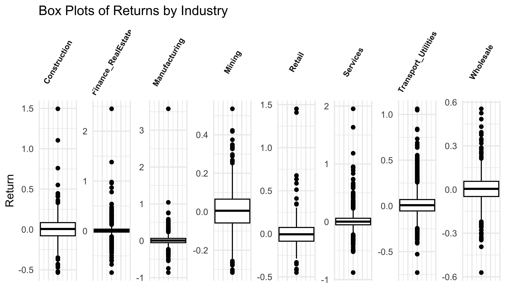
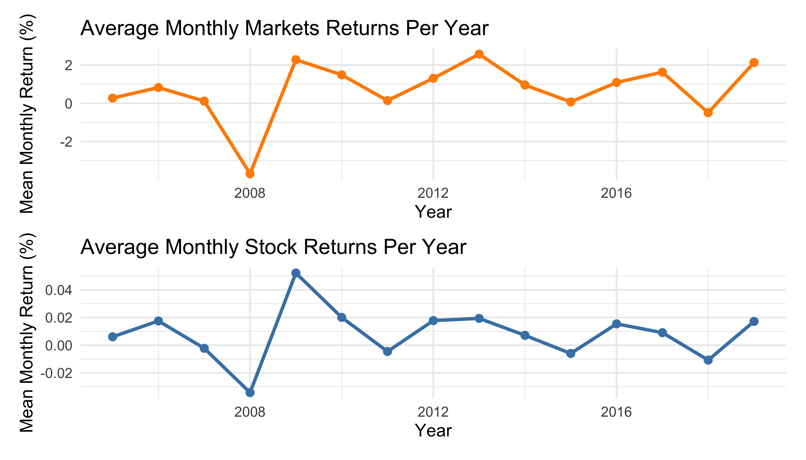
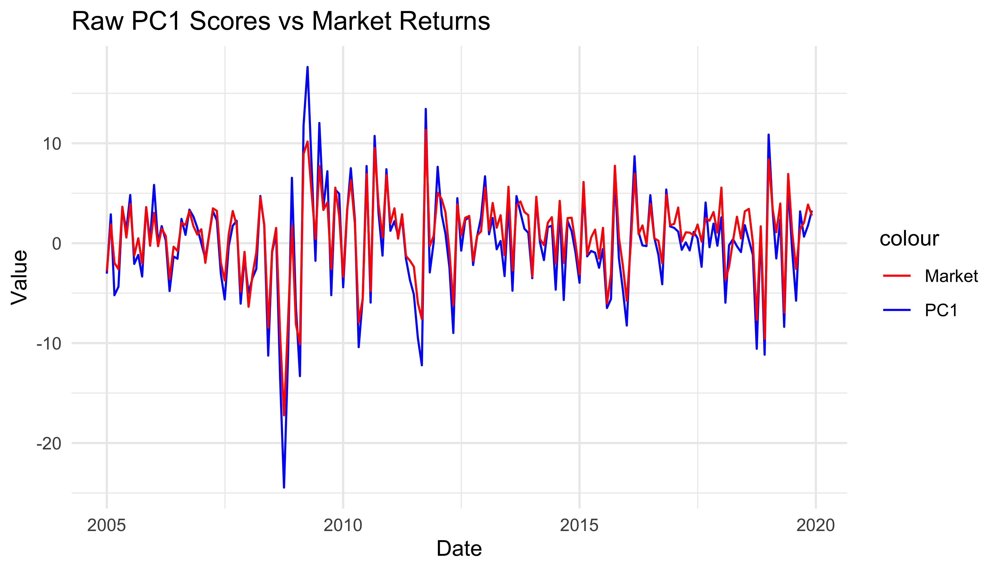
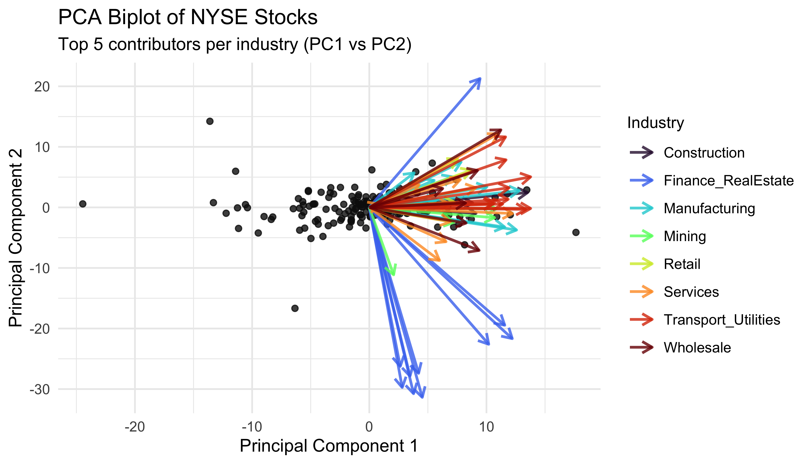
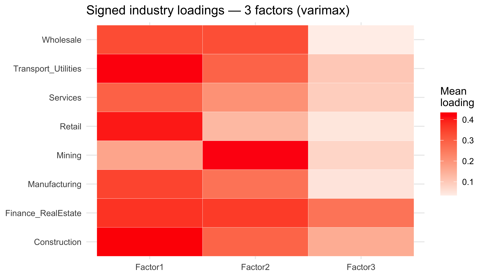

| Industry | Mean | SD | Min | Max |
|---|---|---|---|---|
| Market Return | 0.7152 | 4.114 | -17.23 | 11.35 |
| Overall Stock Return | 0.0083 | 0.117 | -0.88 | 3.58 |
| Construction | 0.0074 | 0.166 | -0.53 | 1.50 |
| Finance_RealEstate | 0.0069 | 0.082 | -0.83 | 2.45 |
| Manufacturing | 0.0101 | 0.155 | -0.86 | 3.58 |
| Mining | 0.0083 | 0.110 | -0.32 | 0.54 |
| Retail | 0.0028 | 0.162 | -0.45 | 1.45 |
| Services | 0.0108 | 0.153 | -0.88 | 1.95 |
| Transport_Utilities | 0.0111 | 0.122 | -0.73 | 1.06 |
| Wholesale | 0.0053 | 0.102 | -0.57 | 0.55 |
Data Description
The SampleJ dataset contains monthly stock returns for around 100 NYSE firms from 2005–2019, forming a balanced panel. The Market dataset, provides a time series of S&P 500 returns over the same period. Both datasets are tidy and complete. Principal Component and Factor Analysis are applied to study common factors and industry-level exposure to systematic risk.
Summary Statistics
Table 1 highlight a clear contrast between market-wide and industry returns. The S&P 500 averages 0.72% per month with higher volatility (SD = 4.11%), reflecting major shocks such as the 2008 crisis and subsequent recovery.
In contrast, SampleJ stocks average near zero (0.008%) with lower volatility (0.12%), showing how diversification reduces individual fluctuations. Volatility differs across sectors, Transport & Utilities, Manufacturing, and Services show the largest swings, while Retail and Construction are more cyclical. Finance/Real Estate and Wholesale remain comparatively stable but still decline during market downturns.
Visual Analysis

Figure 1 shows that market returns are far more dispersed, with a few extreme highs and lows. In contrast, stock returns are tightly clustered around zero but contain many more outliers, indicating that while overall volatility is low, individual stocks can still experience sharp positive or negative movements.

- The boxplots in Figure 2 show that while most industries have medians near zero, their spreads and outliers differ considerably. Mining, Construction, and Retail display the widest IQRs and most extremes, making them highly volatile. Services and Manufacturing earn higher average returns but still show broad variation, reflecting cyclical risk. Finance/Real Estate and Wholesale appear more stable with tighter ranges, while Transport & Utilities lies in between, showing moderate volatility with occasional large movements.

- Figure 3 compares the average yearly S&P 500 returns with the yearly averages from the SampleJ stocks. The market clearly dipped in 2008 and bounced back in 2009, showing the effect of the global financial crisis. Stock returns stayed closer to zero but still moved in the same direction, meaning that even though individual stocks were less volatile, they were still influenced by the wider market. These fluctuations also align with the spike in outliers, showing how market shocks can push returns far from normal levels.
Outlier Analysis
Stock level Outlier Analysis:
Each firm’s return history was checked using the IQR rule, which identified 796 outliers from 2005–2019. Even after removing the 2008–2009 crisis years, 566 remained. This shows that while the global financial crisis created many outliers through systematic shocks, others arose from ongoing idiosyncratic changes within specific firms and industries.

Figure 4 shows the largest spike in 2008–2009, mainly in Finance & Real Estate, with noticeable increases in Transport & Utilities, Services, and Manufacturing. Outlier counts drop after the crisis but don’t disappear, with smaller rises in 2011 and 2018–2019. This pattern highlights how both systematic and idiosyncratic risks continue to influence returns even in calmer markets.
These outliers reflect real variation, not errors. Keeping them preserves important information on how industries co-move and how risk spreads under stress. They were retained but scaled through standardisation to reduce their influence on the results.
PCA on Sample Data
PCA was applied to the standardised stock return data to uncover the main factors driving variation across industries.
From the PCA summary, PC1 explains about 30% of total variation and PC2 adds just over 7%, together accounting for around 37%. Later components each explain less than 4%, and over 19 are needed to reach 70%. This shows that variation in stock returns is spread across many dimensions, though PC1 still captures the largest share.

Figure 5 shows the variance explained by the first 10 principal components. Based on the elbow rule, we retain up to PC2, which together explain about 40% of total variation. The Kaiser rule suggests keeping more components, but this is less practical.
Evaluating Loadings
| Stock | PC1 | PC2 | Industry |
|---|---|---|---|
| H75274 | 0.11 | -0.13 | Finance_RealEstate |
| B83188 | 0.11 | -0.02 | Mining |
| E88953 | 0.14 | 0.00 | Transport_Utilities |
| I86594 | 0.11 | 0.12 | Services |
| H81564 | 0.09 | 0.13 | Finance_RealEstate |
| E77259 | 0.03 | -0.05 | Transport_Utilities |
From Table 2, the loadings indicate how much each stock contributes to each component.
PC1 – Overall Market Movement All industries load positively on PC1, showing that most stocks move in the same overall direction. This reflects broad market behaviour. Finance & Real Estate, Construction, and Transport & Utilities have the strongest loadings, meaning they’re most sensitive to market wide shocks. In contrast, Services and Mining load weaker likely more influenced by sector specific factors.
PC2 – Industry Contrasts PC2 shows both positive and negative loadings, some industries rise when others fall. It separates sectors with opposing behaviour: Retail, Services, and Transport & Utilities load positively, while Finance and Mining lean negative, indicating differences between consumer-driven and financial/resource-based industries.
PC1 VS Market

Figure 6 compares the PCA scores for PC1 with S&P 500 market returns over the same period. The two series move closely together, with peaks and dips almost perfectly aligned. While there are small differences in magnitude, this strong relationship shows that PC1 captures systematic market movements and can be seen as the main market factor.
Although PC1 explains most of the variation, later components such as PC2 represent idiosyncratic or sector-specific effects that move differently from the market.
Biplot

Figure 7 shows how industries contribute to overall variation in stock returns, with arrows representing the top five stocks per industry and their strength of relation to PC1 and PC2.
Finance & Real Estate and Transport & Utilities have the longest arrows, explaining much of the overall movement in returns and linking strongly with PC1 reflecting systematic market behaviour. PC2 contrasts consumer sectors (Retail, Services) with financial and resource-based ones (Finance, Mining).

Figure 8 shows the 15 stocks that contribute most to the first two components. Finance & Real Estate stand out, with several firms loading strongly on both PC1 and PC2. Most finance stocks load positively on PC1, moving with the market, while some load negatively on PC2, showing variation within the sector.
Overall, Finance & Real Estate are the most influential, followed by Construction and Transport & Utilities.
Limitations
PCA assumes linear relationships and uncorrelated components, which may simplify real market behaviour. Therefore, interpretation depends mainly on economic reasoning, although it remains a useful starting point before applying Factor Analysis.
Factor Analysis
To better understand how industries are connected, the analysis extends to Factor Analysis (FA). FA identifies a smaller set of underlying factors that explain how stocks move together and shows the economic or sector forces driving those relationships.
| k | rotation | p_value | |
|---|---|---|---|
| objective...1 | 2 | varimax | 0 |
| objective...2 | 3 | varimax | 0 |
| objective...3 | 2 | promax | 0 |
| objective...4 | 3 | promax | 0 |
From Table 3, the chi-square test rejected the null hypothesis for all models, with p-values near zero. Given the dataset’s high dimensionality, this is expected. Instead, the PCA scree plot (elbow after the second component) and the interpretability of rotated loadings guided the choice of a three-factor model. Adding more factors offered little new economic insight, while three factors captured clear distinctions between industries (e.g., Mining on Factor 2 and Construction on Factor 1), making it the most informative representation of systematic variation.
Industry-level loading summaries (signed and absolute), by factor
| Industry | F1 | F2 | F3 | F1_ab | F2_ab | F3_ab |
|---|---|---|---|---|---|---|
| Construction | 0.43 | 0.29 | 0.154 | 0.43 | 0.29 | 0.173 |
| Finance_RealEstate | 0.37 | 0.36 | 0.261 | 0.40 | 0.36 | 0.287 |
| Manufacturing | 0.34 | 0.26 | 0.049 | 0.34 | 0.26 | 0.100 |
| Mining | 0.17 | 0.42 | 0.078 | 0.27 | 0.42 | 0.078 |
| Retail | 0.40 | 0.13 | 0.047 | 0.40 | 0.13 | 0.059 |
| Services | 0.29 | 0.20 | 0.090 | 0.29 | 0.20 | 0.110 |
| Transport_Utilities | 0.42 | 0.29 | 0.102 | 0.42 | 0.29 | 0.114 |
| Wholesale | 0.33 | 0.33 | 0.034 | 0.33 | 0.33 | 0.071 |
- Greatest degree of loading on the first latent factor
Construction shows the highest average loading on Factor 1 (mean = 0.43, absmean ≈ 0.43), according to the summary tables and heatmaps. This suggests that the first common factor drives returns in the construction sector the most. The largest loading shifts toward Mining (absmean = 0.42) for Factor 2, indicating that this factor captures variation unique to resource-based industries. Finance & Real Estate and Wholesale have the highest loadings on Factor 3, showing that once past the first factor, the main industry drivers change and relationships grow more complex
Identify “largest loading” industry for Factor 1 (and others)
| Factor | Description | Industry | Mean_loading |
|---|---|---|---|
| Factor 1 | Largest degree of loading (by abs(mean)) | Construction | 0.434 |
| Factor 1 | Strongest positive mover (same direction) | Construction | 0.434 |
| Factor 1 | Strongest negative mover (opposite direction) | Mining | 0.168 |
| Factor 2 | Largest degree of loading (by abs(mean)) | Mining | 0.416 |
| Factor 2 | Strongest positive mover (same direction) | Mining | 0.416 |
| Factor 2 | Strongest negative mover (opposite direction) | Retail | 0.131 |
| Factor 3 | Largest degree of loading (by abs(mean)) | Finance_RealEstate | 0.261 |
| Factor 3 | Strongest positive mover (same direction) | Finance_RealEstate | 0.261 |
| Factor 3 | Strongest negative mover (opposite direction) | Wholesale | 0.034 |
Based on Table 5:
- Industries moving in opposite vs same directions
The signed means reveal each industry’s direction. Most sectors load positively on Factor 1, following the general direction of this systematic component. This is consistent with Factor 1 being a general “market” force. However, some industries show weaker or opposite tendencies. Retail displays weaker or negative alignment with certain factors, suggesting shocks in these industries may move against the common market component. Mining, has a low positive mean on Factor 1 (0.17) but loads more heavily on Factor 2. This sign variation confirms that industries react differently to systematic influences.


- Heterogeneity in factor loadings
The unequal loading distribution across industries and factors is clear from the heatmaps Figure 9 and Figure 10. The consistently high exposures of Construction, Finance & Real Estate, and Transport & Utilities suggest these sectors are more systematically driven. Manufacturing and Services show more idiosyncratic behaviour with lower mean loadings. In line with commodity-related shocks, Mining shifts from Factor 1 to Factor 2. This heterogeneity highlights opportunities for diversification by holding industries with low or opposite loadings to dominant factors, reflecting that sectors face different underlying risks.
Systematic Risk Across Industries
Systematic risk reflects broad market forces that cannot be diversified away. From the factor analysis, Construction (0.43), Transport & Utilities (0.42), and Retail (0.40) show the strongest exposures to Factor 1, the broad market factor. These industries are most affected by market-wide shocks, with Construction standing out due to its cyclical nature and sensitivity to downturns. In contrast, Mining and Services have lower loadings, showing more idiosyncratic, industry-specific volatility.
This pattern aligns with the PCA results, where PC1 moved almost closely with the market index during the 2008–2009 crisis. Overall, Construction and Transport & Utilities carry the highest systematic risk, while Services and Manufacturing are more influenced by firm- or sector-specific variation.
Investor Recommendation: Five Stocks That Move With the Market
For an investor seeking exposure to stocks that move with the market, the best choices are those that load strongly and positively on Factor 1. Based on the industry summary tables and heatmaps, Construction, Transport & Utilities, Retail, and Finance & Real Estate show the highest systematic exposures. Within these industries, investors should focus on the stocks with the largest positive loadings.
Our reasonable recommendations are:
C54148 (Construction) – consistently high loading on Factor 1.
E77259 (Transport & Utilities) – strong systematic exposure.
G77530 (Retail) – among the retail stocks, this one shows high positive co-movement.
H75274 (Finance & Real Estate) – finance stocks were especially sensitive during crisis periods, reflecting market-wide shocks.
D75261 (Manufacturing) – while Manufacturing is less dominant than Construction, this stock still shows systematic sensitivity and provides sectoral diversification.
Together, these five stocks cover different industries but all show strong co-movement with the market factor. This gives the investor exposure to systematic risk, the part of return variation that cannot be eliminated by diversification, while still spreading the investment across multiple industries.
Assumptions
The factor model assumes that unique errors are normally distributed, common factors are orthogonal, and asset returns can be expressed as linear combinations of idiosyncratic errors and common factors. These assumptions are approximations, since stock returns often deviate from normality, showing heavy tails, skewness, and volatility clustering. Despite this, the model remains useful for identifying systematic risk and explaining industry-level co-movements.
Limitations
The chi-square goodness-of-fit test consistently rejected all specifications, highlighting the difficulty of applying strict statistical tests in large financial panels. Consequently, interpretation relies more on comparative interpretability and economic reasoning than on hypothesis testing. Factor structures may also evolve over time, for example, the 2008–2009 financial crisis likely changed the relative importance of some industries, meaning factors from 2005–2019 may not hold in later periods. Finally, the findings are limited to this dataset and timeframe and may not generalise to other markets.
References
- Lectures and course materials from ETF5500 - BEX5500
- ChatGPT-4 - We used it cautiously to help with code errors and enhancing visualisations.